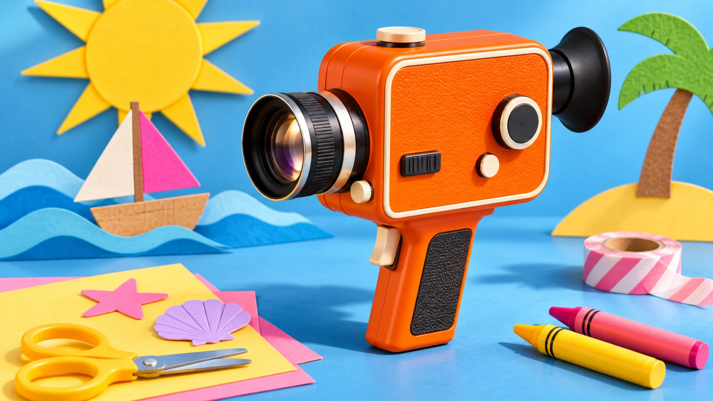

Cameras · Field note 063
Camp Snap shrinks its retro video camera for smaller hands
The $149.99 CS-8 Mini keeps recording simple and leaves playback for later.

Camp Snap announced the CS-8 Mini on November 5, 2026, bringing its retro camcorder idea to a smaller body aimed at younger creators. The Verge reports that it is less than half the size of the original CS-8.
The manufacturer lists the Mini at $149.99 in Electric Blue, Neon Lime, Solar Orange, and Hot Pink. It uses a trigger to record and skips a playback screen, Wi-Fi, Bluetooth, and a companion app.
Four aspect ratios cover vertical, widescreen, square, and traditional 4:3 framing. Five film-style filters are applied while recording; they are baked into the footage rather than saved as an effect to switch off later.
To watch the results, transfer the clips to a phone or computer over USB-C. That design makes reviewing footage a separate step from capturing it.